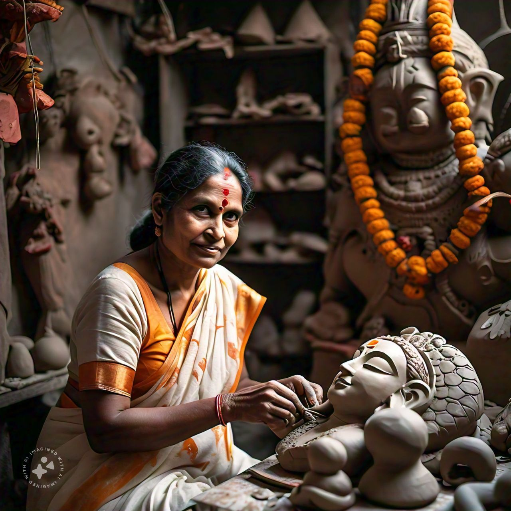

Shanti Akka
Shanti Devi, affectionately known as Shanti Akka, is a beloved artisan from Kumartuli, a renowned hub for traditional clay idol-making in Kolkata, India. Born into a family of artisans, she was steeped in the rich cultural heritage of her community from a young age. Shanti Akka has dedicated her life to crafting puja samagri—an array of sacred offerings for Hindu rituals. With a keen eye for detail and an unwavering commitment to quality, she meticulously creates everything from intricate clay idols to colorful ritual items, ensuring that each piece reflects her devotion and artistry. Over the years, her work has not only preserved traditional craftsmanship but also fostered a deep connection to the spiritual practices of her community.
